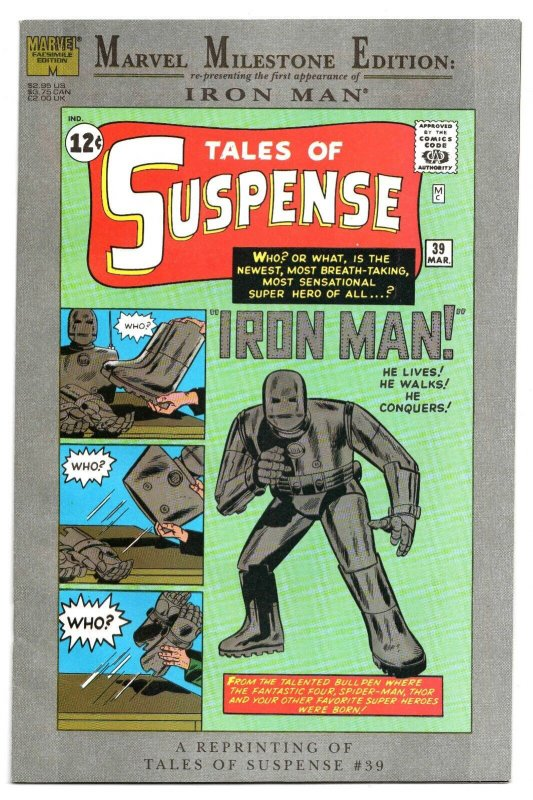
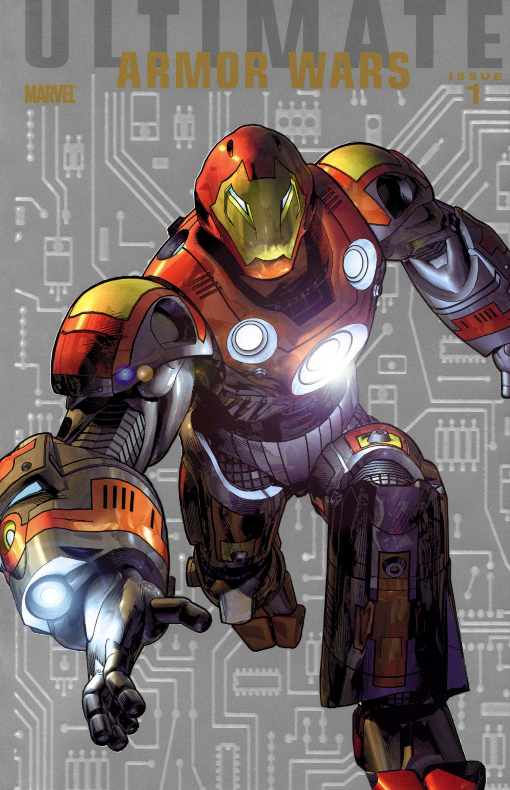

Iron Man |
|||||
| Primera aparicion en comics | Version mas poderosas | Creado por | |||
|---|---|---|---|---|---|
| Aprace por priemra vez en Iron Man 1 en 1968 | The Ultimate Iron Man | Stan Lee, Larry Lieber, Don Heck y Jack Kirby |  |  | |
Datos Personales |
|||||
| Nombre | Fecha de nacimiento | Edad | Interpretado por | Hijos | Esposa |
|---|---|---|---|---|---|
| Anthony Edward Stark | 29 de mayo de 1970 | 53 años | Robert Downey Jr. (2008-2021) | Morgan Stark | Pepper Potts |